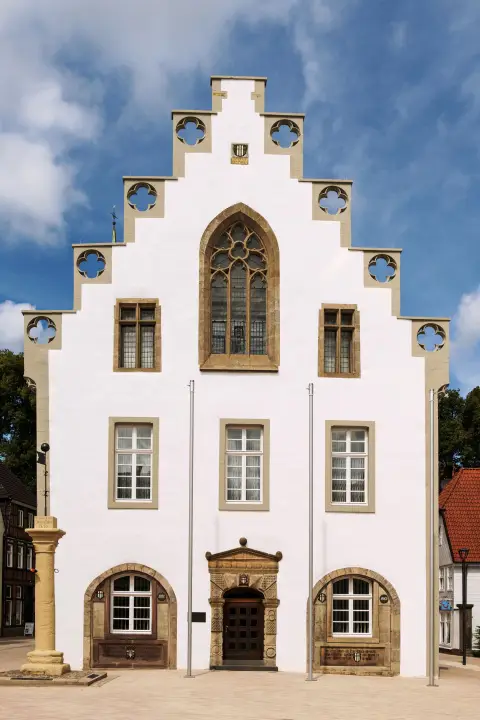
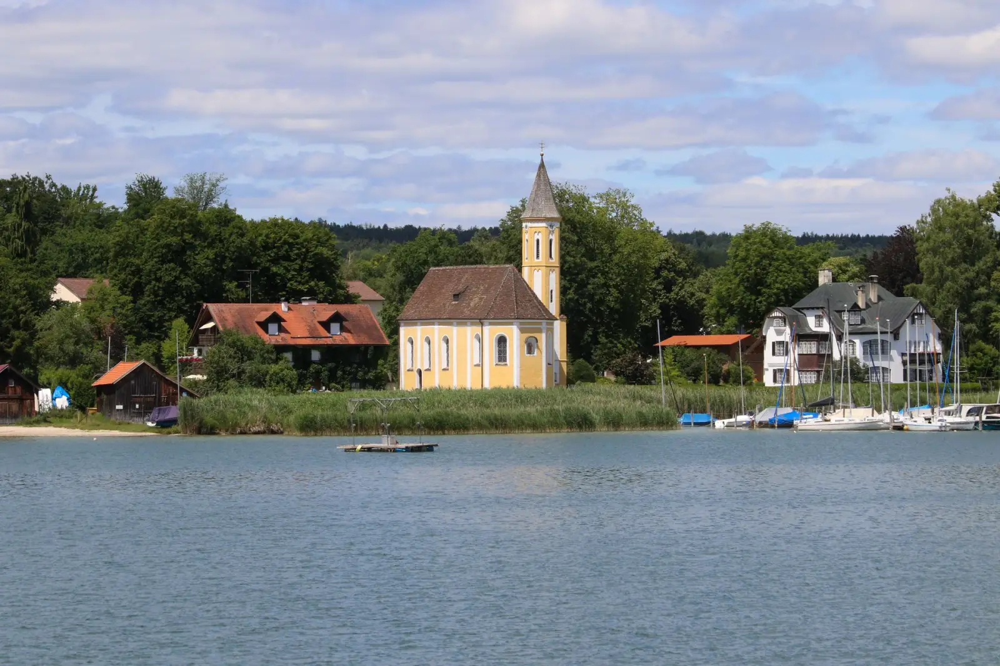
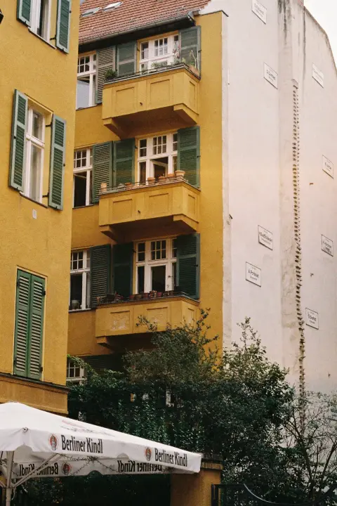
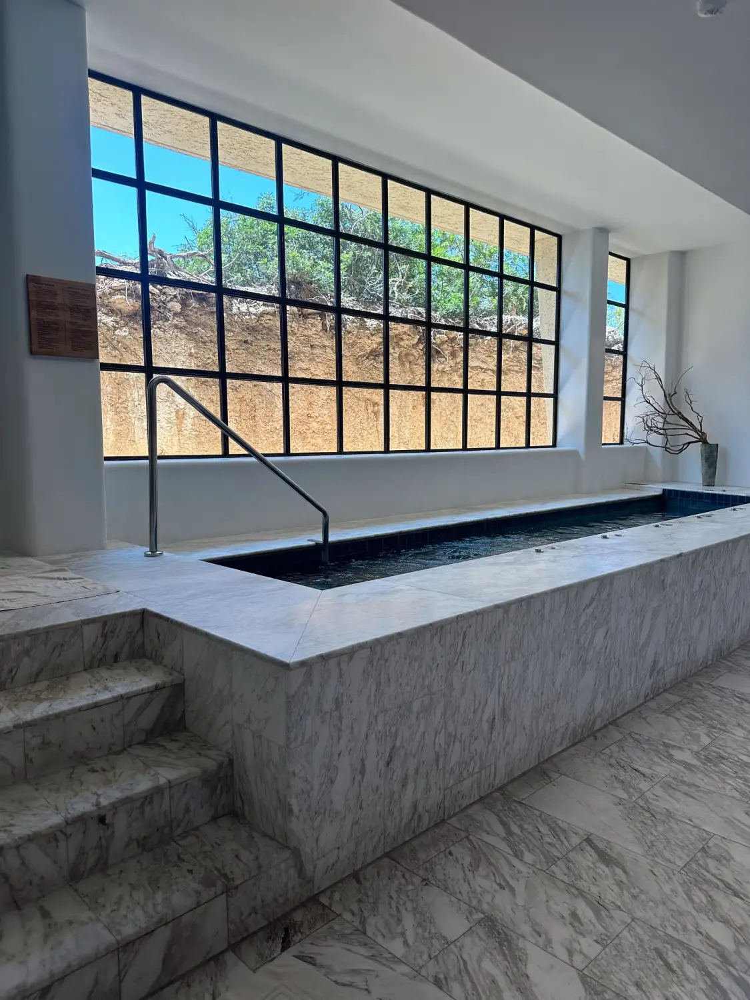

Chapter 7 of 11
Scroll effects
Everything on this page is tied to the scroll position – computed by the browser via animation-timeline, with JavaScript only as a small helper for focus, state or older browsers. Just scroll slowly; use the Inspect button at the bottom right (or Alt+I) and click a block to see its markup and source files. With reduced motion, every effect stands still and stays fully readable.
Reveal shapes
Images, cards or whole sections open up as they scroll in – as an iris, a wipe, a curtain or a zoom. By default the effect follows the scroll (scrolling back rewinds it); with --once it plays once.
Watch out: --zoom belongs on a wrapper around the image, not on the <img> itself.
Scrubbed (follows the scroll)

--circle
--wipe-right
--wipe-left
--wipe-up
--wipe-down
--inset
--split
--diagonal
--zoom (on the wrapper)Once mode (--once)
--circle --once
--split --once--slide-up --once on a panelGrows to full size (--expand)
Reveal-Pin
A pinned stage: the image grows from a card to the full screen, the heading fades out and a panel arrives at the end. Pure CSS, ideal as a big page opener.
Watch out: with <video autoplay> instead of an image, also load js/hero-video-motion.js – CSS cannot pause a video under reduced motion.
A lake that takes up the whole room.

Arrived
A two-minute walk from Hotel Seeblick to the shore – the panel only appears once the image fills the screen.
Morphing
An image starts at full width, shrinks to the side as you scroll and makes room for text that glides in next to it – pure CSS. --start sends the medium to the left, --card and --circle also change its shape.
Watch out: keep the text shorter than one screen height; in narrow containers the image simply sits above the text.

Default: to the end
The lake house
Twelve rooms in the old boathouse, the lawn runs down to the water. Scrolling back rewinds the morph.

--start --card
Mornings on the jetty
The image moves to the left and becomes a card with a shadow – the text comes in from the right.
Text reveal
A big sentence starts pale and brightens as you read – line by line or in reading flow, both without JS; word by word works with data-ncss-text-reveal + js/text-reveal.js. Good for a statement between two sections, not for body text.
Watch out: --flow needs the whole text in exactly one <span>.
Lines (default, no JS)
In the morning, mist lies over the water. Early risers have the jetty to themselves – and their first coffee with a view of the mountains.
Flow (--flow, no JS)
In flow mode the brightness travels across the lines in reading direction, as if the whole paragraph were one long line.
Count-up
Key figures count up as they come into view. The real, formatted number is in the HTML – screen readers, search engines and copy-paste always get the final value.
Watch out: the target goes into --ncss-count-to as an integer; without JS the thousands separators are missing while counting.
42rooms & suites
1,200 m²spa and relaxation rooms
98%would come back
1912year founded
Marquee
An endless band for events, logos or pictures. It stops on hover and focus; content that carries meaning needs a pause button, which the script wires up.
Watch out: write only one group in the markup – js/marquee.js creates the copy that is hidden from screen readers.
- Advent market on the square
- Council meeting, 7 pm
- Lantern walk along the shore
- Citizens’ office open until 6 pm
- New Year reception at the town hall
Horizontal scroll
Scroll down, move sideways: the row glides through a sticky stage. The script matches the scroll distance to the row and brings links focused via Tab into view – try it with the keyboard.
Watch out: as soon as the row contains links or buttons, js/scroll-horizontal.js is mandatory (keeps focus visible).


Stacked Cards
A stage stays put while cards slide in one after another and settle into a fanned stack. Without support the cards simply stand one below the other.
Watch out: --ncss-stack-count and every --ncss-stack-index are set by hand – CSS does not count the cards itself.
Package 1

Lake time
3 nights, breakfast, a rowing boat for one day – from €420.
Package 2
Spa break
2 nights, massage, sauna and indoor pool – from €360.
Package 3

Gourmet
4 nights, half board with a lakeside menu – from €610.
Package 4

Winter light
2 nights between Christmas and New Year, mulled wine on the jetty – from €330.
Scrollytelling: <ncss-scrolly>
Text steps next to a sticky image column: the step at the middle of the screen is active and shows its image. Each step can carry a timestamp that the event reports – for a synced video, for example.
Watch out: exactly one .ncss-scrolly-figure per step, in the same order.
Last event:
1. Arriving in Seeburg
The village sits right on the water – the walk starts on the shore, where the houses are mirrored in the lake.
2. The town hall
17th-century gables, today the citizens’ office and wedding room.
3. Church by the lake
The tower can be seen from every point on the shore – and in summer it hosts concerts.
4. The bathing jetty
End of the walk: shoes off, feet in the water.




Image sequence: <ncss-scroll-frames>
72 single frames on a canvas, drawn to match the scroll position – scrubs buttery-smooth in every browser because nothing has to be decoded. Frames load just before they are needed, coarse first, then refined.
Watch out: the <img> is both fallback and alt text – without JS, with reduced motion or in data-saver mode only this still image remains.
Curtain sections
Each section stays put while the next one slides over it like a curtain; --scale makes the covered one recede, --dim darkens it. Even extra-long sections show all their content first.
Watch out: every section needs an opaque background, e.g. a .ncss-surface--* class directly on it.
Seeburg municipality
Spring on the shore
Keep scrolling – the next season slides over it.
Summer at the bathing jetty
From June the jetty is open daily from 7 am to 9 pm; lifeguards are on duty at weekends.
Winter on the market square
The last section is never covered – this is where the curtain ends.
Roadmap (self-drawing timeline)
Milestones on a line whose coloured part draws itself as you scroll – the grey track shows how far there is still to go. Without support the line is simply fully drawn.
New Seeburg lake promenade
-
Citizens’ workshop
Three evenings at the town hall, 140 ideas on notes and maps.
-
Design approved
The council picks the design with a wooden deck and new benches.
-
Construction on the shore
Section between the boat harbour and the bathing jetty, diversion via Seestraße.
-
Opening party
With the brass band, fish rolls and the first boat trip of the season.
Reading progress
Look at the very top and at the right edge: both bars show how far down this page you are – an empty <div>, a scroll timeline, no scroll listener. The colour comes from the surface helpers, such as .ncss-gradient-brand.
Watch out: with z-index 1000 the bar sits above everything – plan your own sticky headers below it.
Scroll-Snap & Sticky
The mechanics underneath all the effects: snapping rows for galleries, full-screen sections that snap one by one, and sticky headers or footers inside a scroll box. No JS at all.
Watch out: .ncss-snap-sections is normally screen-high – here it sits in a 22rem box so you can try it.
Snapping row (.ncss-scroll-snap-x)




Full-screen sections, embedded (.ncss-snap-sections)
1 · Location
Quiet side street, bakery and bus five minutes away.
2 · Apartment
78 m², three rooms, south balcony, floorboards.
3 · Viewing
Saturdays 10 am to 12 noon, no appointment needed.
Sticky inside a box (.ncss-sticky)
Weekly programme
- MonYoga on the jetty, 7:30 am
- TueHerb walk with the gardener
- WedRowing course for beginners
- ThuSauna evening with infusions
- FriFish menu on the terrace
- SatWeekly market in Seeburg
- SunLate breakfast until noon
- dailyBike rental at reception
- dailyIndoor pool 7 am to 10 pm
Sign up at reception
Animation helpers
Small, ready-made motion instead of an animation library: entrances on insert, endless loops for loading and attention, micro-interactions on hover and click. All run on the motion tokens and go quiet with reduced motion.
Watch out: .ncss-animate-shake needs a trigger – add the class, remove it again after animationend.
Entrances
fade-in
scale-in
Loops: loading & attention
.ncss-animate-spinLive from the jetty
.ncss-animate-pulse.ncss-skeleton
Expired – check it to test.
.ncss-animate-shake
.ncss-glow-border.ncss-glow-pulseMicro-interactions (hover, click and hold)
More: .ncss-transition, -slow, -transform and .ncss-gpu-boost against jank on expensive repaints (use sparingly) – micro-interactions in the handbook.
View Transitions
The accordion swaps its image natively via :has(); js/view-transitions.js turns that into a smooth transition – here with data-transition="slide". For smooth changes between whole pages there is the pure-CSS opt-in page-transitions.css, which both source and target page must load.
Watch out: view transitions do not react to reduced motion on their own – the NativeCSS files therefore check it themselves.
Indoor pool
Marble pool with paned windows onto the park, water at 29 °C, daily 7 am to 10 pm.
Sauna
Finnish wooden sauna with evening infusions, then straight into the lake.
Relaxation room
Loungers with blankets, tea and a view of the greenery – phones stay outside.
